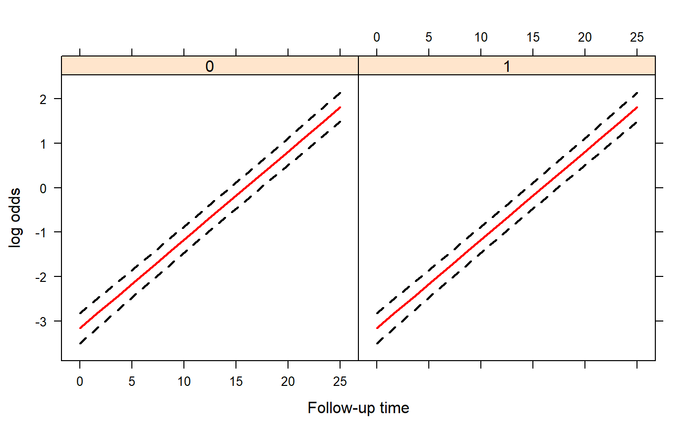
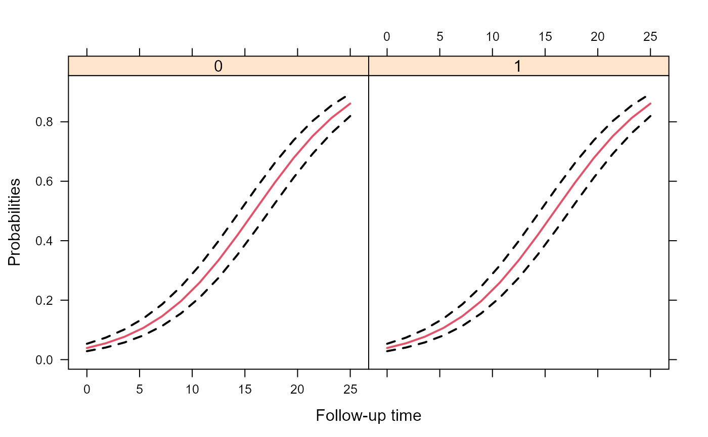
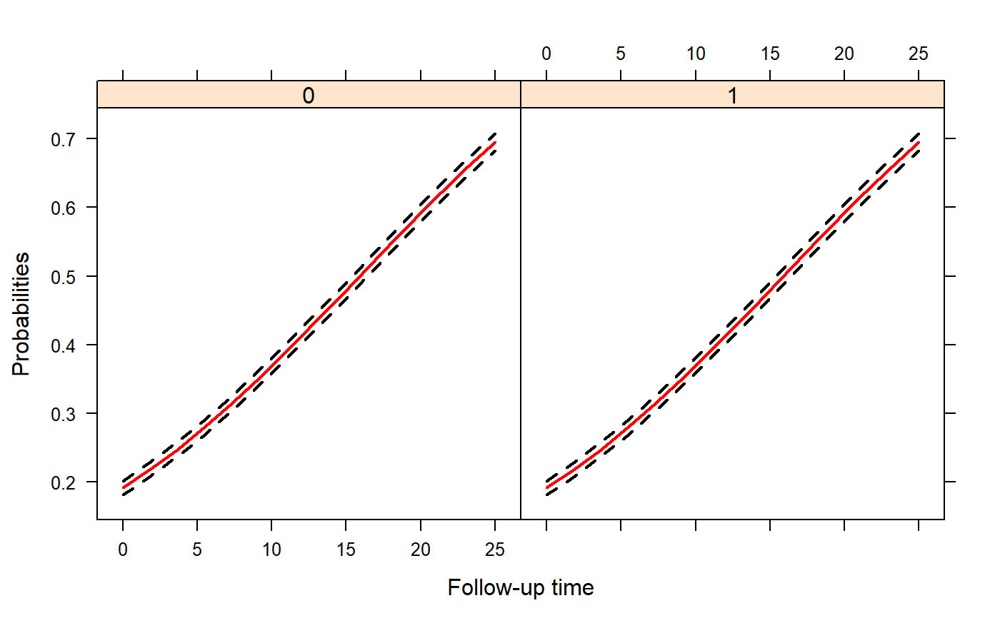

Generalized Linear Mixed Effects Models
mixed_model.RdFits generalized linear mixed effects models under maximum likelihood using adaptive Gaussian quadrature.
Usage
mixed_model(fixed, random, data, family, weights = NULL,
na.action = na.exclude, zi_fixed = NULL, zi_random = NULL,
penalized = FALSE, n_phis = NULL, initial_values = NULL,
control = list(), ...)Arguments
- fixed
a formula for the fixed-effects part of the model, including the outcome.
- random
a formula for the random-effects part of the model. This should only contain the right-hand side part, e.g.,
~ time | id, wheretimeis a variable, andidthe grouping factor. When the symbol||is used in the definition of this argument (instead of|), then the covariance matrix of the random effects is assumed to be diagonal.- data
a data.frame containing the variables required in
fixedandrandom.- family
a
familyobject specifying the type of the repeatedly measured response variable, e.g.,binomial()orpoisson(). The function also allows for user-defined family objects, but with specific extra components; see the example isnegative.binomialfor more details. Contrary to the standard practice in model fitting R functions with afamilyargument (e.g.,glm) in which the default family isgaussian(), inmixed_model()no default is provided. If the users wish to fit a mixed model for a Gaussian outcome, this could be done with functionlme()from the nlme package or functionlmer()from the lme4 package.- weights
a numeric vector of weights. These are simple multipliers on the log-likelihood contributions of each group/cluster, i.e., we presume that there are multiple replicates of each group/cluster denoted by the weights. The length of `weights` need to be equal to the number of independent groups/clusters in the data.
- na.action
what to do with missing values in
data.- zi_fixed, zi_random
formulas for the fixed and random effects of the zero inflated part.
- penalized
logical or a list. If logical and equal to
FALSE, then no penalty is used. If logical and equal toTRUE, for the fixed effects a Student's-t penalty/prior with mean 0, scale equal to 1 and 3 degrees of freedom is used. If a list, then it is expected to have the componentspen_mu,pen_sigmaandpen_df, denoting the mean, scale and degrees of freedom of the Student's-t penalty/prior for the fixed effects.- n_phis
a numeric scalar; in case the family corresponds to a distribution that has extra (dispersion/shape) parameters, you need to specify how many extra parameters are needed.
- initial_values
a list of initial values. This can have up to three components, namely,
- betas
a numeric vector of fixed effects. This can also be
familyobject. In this case initial values for the fixed effects will be calculated by usingglmto the data ignoring the correlations in the repeated measurements. For example, for a negative binomial response outcome, we could setbetas = poisson().- D
a numeric matrix denoting the covariance matrix of the random effects.
- phis
a numeric vector for the extra (dispersion/shape) parameters.
- control
a list with the following components:
- iter_EM
numeric scalar denoting the number of EM iterations; default is 30.
- iter_qN_outer
numeric scalar denoting the number of outer iterations during the quasi-Newton phase; default is 15. In each outer iteration the locations of the quadrature points are updated.
- iter_qN
numeric scalar denoting the starting number of iterations for the quasi-Newton; default is 10.
- iter_qN_incr
numeric scalar denoting the increment in
iter_qNfor each outer iteration; default is 10.- optimizer
character string denoting the optimizer to be used; available options are
"optim"(default),"nlminb"and"optimParallel", the last option implemented in the optimParallel package.- optim_method
character string denoting the type of
optimalgorithm to be used whenoptimizer = "optim"; default is the BFGS algorithm.- parscale_betas
the control argument
parscaleofoptimfor the fixed-effects; default is 0.1.- parscale_D
the control argument
parscaleofoptimfor the unique element of the covariance matrix of the random effects; default is 0.01.- parscale_phis
the control argument
parscaleofoptimfor the extra (dispersion/shape) parameters; default is 0.01.- tol1, tol2, tol3
numeric scalars controlling tolerances for declaring convergence;
tol1andtol2are for checking convergence in successive parameter values;tol3is similar toreltopofoptim; default values are1e-03,1e-04, and1e-08, respectively.- numeric_deriv
character string denoting the type of numerical derivatives to be used. Options are
"fd"for forward differences, andcdfor central difference; default is"fd".- nAGQ
numeric scalar denoting the number of quadrature points; default is 11 when the number of random effects is one or two, and 7 otherwise.
- update_GH_every
numeric scalar denoting every how many iterations to update the quadrature points during the EM-phase; default is 10.
- max_coef_value
numeric scalar denoting the maximum allowable value for the fixed effects coefficients during the optimization; default is 10.
- max_phis_value
numeric scalar denoting the maximum allowable value for the shape/dispersion parameter of the negative binomial distribution during the optimization; default is
exp(10).- verbose
logical; print information during the optimization phase; default is
FALSE.
- ...
arguments passed to
control.
Details
General: The mixed_model() function fits mixed effects models in which the
integrals over the random effects in the definition of the marginal log-likelihood cannot
be solved analytically and need to be approximated. The function works under the
assumption of normally distributed random effects with mean zero and variance-covariance
matrix \(D\). These integrals are approximated numerically using an adaptive
Gauss-Hermite quadrature rule. Using the control argument nAGQ, the user can
specify the number of quadrature points used in the approximation.
User-defined family: The user can define its own family object; for an example,
see the help page of negative.binomial.
Optimization: A hybrid approach is used, starting with iter_EM iterations
and unless convergence was achieved it continuous with a direct optimization of the
log-likelihood using function optim and the algorithm specified by
optim_method. For stability and speed, the derivative of the log-likelihood with
respect to the parameters are internally programmed.
Value
An object of class "MixMod" with components:
- coefficients
a numeric vector with the estimated fixed effects.
- phis
a numeric vector with the estimated extra parameters.
- D
a numeric matrix denoting the estimated covariance matrix of the random effects.
- post_modes
a numeric matrix with the empirical Bayes estimates of the random effects.
- post_vars
a list of numeric matrices with the posterior variances of the random effects.
- logLik
a numeric scalar denoting the log-likelihood value at the end of the optimization procedure.
- Hessian
a numeric matrix denoting the Hessian matrix at the end of the optimization procedure.
- converged
a logical indicating whether convergence was attained.
- data
a copy of the
dataargument.- id
a copy of the grouping variable from
data.- id_name
a character string with the name of the grouping variable.
- Terms
a list with two terms components,
termsXderived from thefixedargument, andtermsZderived from therandomargument.- model_frames
a list with two model.frame components,
mfXderived from thefixedargument, andmfZderived from therandomargument.- control
a copy of the (user-specific)
controlargument.- Funs
a list of functions used in the optimization procedure.
- family
a copy of the
familyargument.- call
the matched call.
Author
Dimitris Rizopoulos d.rizopoulos@erasmusmc.nl
Examples
# simulate some data
set.seed(123L)
n <- 200
K <- 15
t.max <- 25
betas <- c(-2.13, -0.25, 0.24, -0.05)
D <- matrix(0, 2, 2)
D[1:2, 1:2] <- c(0.48, -0.08, -0.08, 0.18)
times <- c(replicate(n, c(0, sort(runif(K-1, 0, t.max)))))
group <- sample(rep(0:1, each = n/2))
DF <- data.frame(year = times, group = factor(rep(group, each = K)))
X <- model.matrix(~ group * year, data = DF)
Z <- model.matrix(~ year, data = DF)
b <- cbind(rnorm(n, sd = sqrt(D[1, 1])), rnorm(n, sd = sqrt(D[2, 2])))
id <- rep(1:n, each = K)
eta.y <- as.vector(X %*% betas + rowSums(Z * b[id, ]))
DF$y <- rbinom(n * K, 1, plogis(eta.y))
DF$id <- factor(id)
################################################
fm1 <- mixed_model(fixed = y ~ year * group, random = ~ 1 | id, data = DF,
family = binomial())
# fixed effects
fixef(fm1)
#> (Intercept) year group1 year:group1
#> -2.51135823 0.23304276 -0.88784195 -0.05174851
# random effects
head(ranef(fm1))
#> (Intercept)
#> 1 0.2428149
#> 2 2.1943191
#> 3 1.2898486
#> 4 -1.2667384
#> 5 -0.7294567
#> 6 3.1614903
# detailed output
summary(fm1)
#>
#> Call:
#> mixed_model(fixed = y ~ year * group, random = ~1 | id, data = DF,
#> family = binomial())
#>
#> Data Descriptives:
#> Number of Observations: 3000
#> Number of Groups: 200
#>
#> Model:
#> family: binomial
#> link: logit
#>
#> Fit statistics:
#> log.Lik AIC BIC
#> -1225.973 2461.947 2478.438
#>
#> Random effects covariance matrix:
#> StdDev
#> (Intercept) 2.851543
#>
#> Fixed effects:
#> Estimate Std.Err z-value p-value
#> (Intercept) -2.5114 0.3430 -7.3216 < 1e-04
#> year 0.2330 0.0155 15.0812 < 1e-04
#> group1 -0.8878 0.4816 -1.8437 0.0652272
#> year:group1 -0.0517 0.0195 -2.6534 0.0079694
#>
#> Integration:
#> method: adaptive Gauss-Hermite quadrature rule
#> quadrature points: 11
#>
#> Optimization:
#> method: hybrid EM and quasi-Newton
#> converged: TRUE
# fitted values for the 'mean subject', i.e., with
# random effects values equal to 0
head(fitted(fm1, type = "mean_subject"))
#> 1 2 3 4 5 6
#> 0.03232047 0.03944053 0.10950605 0.17572685 0.20676636 0.20921567
# fitted values for the conditioning on the estimated random effects
head(fitted(fm1, type = "subject_specific"))
#> 1 2 3 4 5 6
#> 0.04084042 0.04974091 0.13552321 0.21370151 0.24941898 0.25221291
##############
# \donttest{
fm2 <- mixed_model(fixed = y ~ year, random = ~ 1 | id, data = DF,
family = binomial())
# likelihood ratio test between the two models
anova(fm2, fm1)
#>
#> AIC BIC log.Lik LRT df p.value
#> fm2 2477.04 2486.94 -1235.52
#> fm1 2461.95 2478.44 -1225.97 19.1 2 1e-04
#>
# the same hypothesis but with a Wald test
anova(fm1, L = rbind(c(0, 0, 1, 0), c(0, 0, 0, 1)))
#>
#> Marginal Wald Tests Table
#>
#> User-defined contrasts matrix:
#> (Intr) year group1 yr:gr1
#> 0 0 1 0
#> 0 0 0 1
#>
#> Chisq df Pr(>|Chi|)
#> 18.7743 2 1e-04
#>
##############
# An effects plot for the mean subject (i.e., with random effects equal to 0)
nDF <- with(DF, expand.grid(year = seq(min(year), max(year), length.out = 15),
group = levels(group)))
plot_data <- effectPlotData(fm2, nDF)
require("lattice")
xyplot(pred + low + upp ~ year | group, data = plot_data,
type = "l", lty = c(1, 2, 2), col = c(2, 1, 1), lwd = 2,
xlab = "Follow-up time", ylab = "log odds")

expit <- function (x) exp(x) / (1 + exp(x))
xyplot(expit(pred) + expit(low) + expit(upp) ~ year | group, data = plot_data,
type = "l", lty = c(1, 2, 2), col = c(2, 1, 1), lwd = 2,
xlab = "Follow-up time", ylab = "Probabilities")

# An effects plots for the marginal probabilities
plot_data_m <- effectPlotData(fm2, nDF, marginal = TRUE, cores = 1L)
expit <- function (x) exp(x) / (1 + exp(x))
xyplot(expit(pred) + expit(low) + expit(upp) ~ year | group, data = plot_data_m,
type = "l", lty = c(1, 2, 2), col = c(2, 1, 1), lwd = 2,
xlab = "Follow-up time", ylab = "Probabilities")

##############
# include random slopes
fm1_slp <- update(fm1, random = ~ year | id)
# increase the number of quadrature points to 15
fm1_slp_q15 <- update(fm1_slp, nAGQ = 15)
# a diagonal covariance matrix for the random effects
fm1_slp_diag <- update(fm1, random = ~ year || id)
anova(fm1_slp_diag, fm1_slp)
#>
#> AIC BIC log.Lik LRT df p.value
#> fm1_slp_diag 2112.08 2131.87 -1050.04
#> fm1_slp 2113.83 2136.91 -1049.91 0.25 1 0.6141
#>
# }